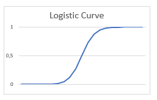
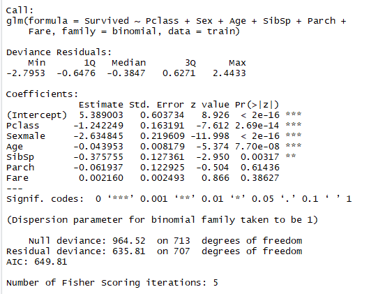
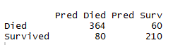
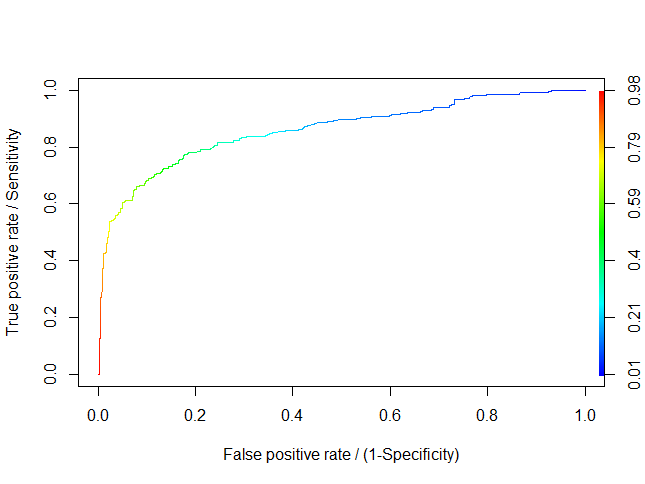

Logistic Regression¶
Don’t be fooled by the name, logistic regression is actually a classification model and one of the most commonly used at that. However, the name still makes sense as the mathematics of this model are based on linear regression.
Theory¶
Here, I’ll present binomial logistic regression in detail which can then be extended to a multinomial model.
Binomial Logistic Regression¶
Say we have a binary variable, Y, with values 0 or 1. Instead of predicting the dependent variable directly, we predict the probability that the dependent variable, Y, is 1 given a vector of independant variables \(\vec{x}\). This is written mathematically as a conditional probability: \(P(Y=1 |\vec{X} = \vec{x} )\).
Taking the linear regression model \(Y = \beta_0 + \beta.X\), replacing \(Y\) with the conditional probability, now written as \(p(x; \beta)\), and then applying the inverse logisitc function gives the following model:
If we solve the equation for \(p(x; \beta)\) then we have:
So now the conditional probability is expressed as a logistic function, a common sigmoid function, having the form \(f(x)=\frac{1}{1 + exp(x)}\). The logistic or logit function, graphed below, is bounded between 0 and 1 which corresponds nicely to our conditional probability which must also be between 0 and 1. It also takes into account diminishing returns as opposed to a linear function which has a constant gradient.
{kind=link}
Knowing that this model is a transformation of the linear regression model, it becomes obvious that it is a “regression” model and that it is in fact a linear model. Furthermore, logistic regression belongs to the more general family of generalised linear models (GLM) and in R the glm() function is used to implement it.
To minimise the misclassification rate, we predict Y = 1 when p>=0.5 and Y=0 otherwise. This is equivalent to predicting that Y=1 when \(\beta_0 + x.\beta = 0\) and \(Y=0\) otherwise. Therefore, the equation to the decision boundary separating the two classes is \(\beta_0 + x.\beta = 0\).
Multinomial Logistic Regression¶
The multinomial model with k classes has k-1 sets of parameters. This is coherent with the binomial model which has one set of parameters to distinguish between the two classes. A simple way to implement a multinomial logistic regression is to run a series of k-1 binomial logistic regressions by comparing one class to the other k-1 other classes grouped together. However, this is not the only method to formulate a multinomial logistic regression.
Numerical Optimisation¶
The maximum likelihood function is used to calculate the parameters of the logistic model:
Taking the log of both sides of this equation, and so obtaining the log-likelihood, eliminates the product and replaces it with a sum. Similarly, the exponents become multipliers. We can then rewrite the equation as:
Using the fact that
Where we have a vector of features, \(x_i\), an observed class \(y_i\) and the probability \(p(x_i;\beta)\), that \(y_i\) is 1.
Usually to find the parameters, we set the partial derivatives of the maximum likelihood function, below, to zero.
However, there is no analytical solution and so numerical optimisation is used to solve it. There are multiple possible numerical optimisation methods available. A common method, also used in R’s glm() function, is iteratively reweighted least squares.
Iteratively reweighted least squares¶
Each step involves solving a weighted least squares problem using Newton’s or the Newton Raphson method. Newton’s algorithm, for an initial estimate \(x_0\), performs the following update:
This process solves for \(f(x) = 0\). However, if we want to find the maximum of a function, we solve for \(f'(x)=0\). So substituting \(f(x) = l'(x)\) into the equation we have the following update:
Applying this to logistic regression we have:
Where the second derivative, called the Hessian, is:
Initially, this relationship isn’t necessarily evident. If we calculate the first three partial derivatives it becomes clear.
If we do the same for \(\beta_1\):
Likewise for \(\beta_3\):
And so on and so forth.
Now we can manipulate the equation for \(\beta^{n+1}\) in order to write it as a weighted least squares step. Since the log-likehood equations are concave it does converge.
The update process can be rewritten in matrix form with \(\vec{p}\) representing the probabilities \(p(x_i;\beta)\) and W a diagonal matrix with entries \(p(x_i;\beta)(1-p(x_i;\beta))\):
This can then be rewritten, with \(\vec{z}= X\vec{\beta}^n + W(\vec{y}-\vec{p})\), to represent a weighted least squares step:
In the case of a linear regression we obtain the standard least squares solution which is calculated in a single step since \(\beta^{n+1}\) is independant of :math:beta^{n}.
Pros and Cons¶
Part of the reason for the popularity of logistic regression is that it is a traditional and therefore better-known method. Other advantages are that it allows the calculation of log-odds and the ability to validate the model using p-values and anova.
Code¶
This is fairly basic example using the well-known Titanic data set. You’ll need the package “Titanic” which supplies the data in an easy to use format. I’ve simply deleted the rows containing null values, but I could also have replaced them with for example, the median value. Note that a 1 in the Survived column indicates the person survived as opposed to 0. The survivors are also referred to as positives or positive instances. The variable SibSp represents the number of siblings/spouses aboard and the variable Parch represents the number of parents/children aboard.
#Step1. Load the data and create the model
library(titanic)
#Clean the data to remove NAs
train<-na.omit(titanic_train[,c("Survived","Pclass","Sex", "Age","SibSp","Parch","Fare")])
#Create the model
model = glm(Survived~Pclass + Sex + Age + SibSp + Parch + Fare, family=binomial, data=train)
summary(model)
The summary output shows that the last two variables are not significant so we can delete them and rerun the model. Doing this gives us a model with only significant variables and slightly reduces the AIC.
{kind=link}
We can also use the anova() function to evaluate the model. The difference between summary() and anova() is that the anova() function tests the models in sequential order. Starting with Survived ~ 1 and at each step adding another variable until the complete model is tested. This means your variables will not have the same p-values for the two methods. What you will notice though is that the null and residual deviances in the summary match the first and last deviances in the “Resid. Dev” column for the anova output. In the anova, we can see how much the residual deviance changes by adding each additional variable. The last two variables have very little impact.
anova(model, test="Chisq")
{kind=link}
If we want to look at the classification results we can create a confusion matrix. We get the same matrix with or without the non-siginificant variables (Parch and Fare). So for both models we have an 80% ( \(\frac{364+210}{714}\)) accuracy rate where the instances on the diagonal have been correctly classified.
pred <- predict(model, type = 'response')
cm<-table(train$Survived, pred > 0.5)
colnames(cm)<-c("Pred Died", "Pred Surv")
rownames(cm)<-c("Died", "Survived")
cm
Resulting confusion matrix:
{kind=link}
We can also look at the ROC curve and calculate the AUC (area under the ROC curve) to evaluate the quality of our model. The ROC curve shows the relationship between the true positive rate and false positive rate as the threshold of the classifier changes. The true positive rate is the number of correctly classed positive instances (survivors) divided by the total number of positive instances. As the rate of instances correctly classed as “positive” increases than the rate of false positives also increases and vice versa. We can also label the axes as sensitivity and (1- specificity). So we see that as sensitivity increases, (1-specificity) increases and so specificity (the true negative rate) decreases.
The AUC gives the probability that the model will assign a randomly chosen positive instance (1 or survived) a higher score, in our case a probability, than a randomly chosen negative instance (0 or died). We want the AUC to be closer to 1 than 0.5 and in a perfect world it would be 1. It can also be used to compare different models. For our model the AUC is 0.86 which is considered to be a good level of accuracy, anything less than 0.7 would be considered poor. The 45° line represents classification by random guessing with an AUC equal to 0.5. Therefore, no model should have an AUC of less than 0.5 whereby the classifier would be worse than chosing randomly. Ideally the curve will arch towards the left-hand and top borders of the plotting area like our case.
library(ROCR)
ROCpred <- prediction(pred, train$$Survived)
ROCperf <- performance(ROCpred, measure='tpr', x.measure='fpr')
#tpr=true positive rate, fpr=false positive rate
#Plot the graph
plot(ROCperf, colorize = TRUE, ylab="True positive rate / Sensitivity", xlab="False positive rate / (1-Specificity)")
abline(c(0,0),1)
#Calculate "Accuracy Under the Curve"
auc <- performance(ROCpred, measure = "auc")
auc <- auc@y.values[[1]]
auc
Resulting ROC curve:
{kind=link}
References¶
http://www.stat.cmu.edu/%7Ecshalizi/uADA/12/lectures/ch12.pdf
Numerical optimisation:
http://cs229.stanford.edu/notes/cs229-notes1.pdf#page=20
https://cise.ufl.edu/class/cis6930sp10esl/downloads/LogisticRegression.pdf
ROC, AUC:
https://ccrma.stanford.edu/workshops/mir2009/references/ROCintro.pdf